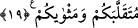

BİL Kİ,
ALLAH’TAN BAŞKA
İLÂH YOKTUR
16. Onlardan kimi de gelip seni dinler. Fakat senin yanından çıktıkları zaman
kendilerine bilgi verilmiş olanlara: “Demin ne söyledi?” derler. Onlar Allah’ın
kalblerini mühürlediği, keyiflerinin ardına düşmüş kimselerdir.
17. Hidâyet bulanlara gelince, Allah onların hidâyetlerini artırmış ve onlara
korunmalarını (kendilerini kötü sonuçtan koruma çareleri) vermiştir.
18. (İnanmayanlar) ille (helâk edilecekleri) sâ‘atin ansızın kendilerine gelmesini
mi bekliyorlar? İşte onun belirtileri geldi. O uyarıldıkları sâ‘at kendilerine
geldikten sonra artık öğüt almaları nereden mümkün olsun?
19. Allah’tan başka ilah olmadığını bil ve kendi günâhın, inanan erkeklerin ve
inanan kadınların günâhı için (Allah’tan) mağfiret dile. Allah, dönüp dolaşacağınız
yeri ve varıp duracağınız yeri bilir.
“Onlardan” münafıklardan “kimi de gelip seni dinler;” işittiklerini kavrayıp onu
hakkıyla gözetmez, işittiği şeyleri küçümseyip önemsemez. “Fakat” o münafıklar
“senin yanından çıktıkları zaman kendilerine bilgi verilmiş olanlara:” Abdullah b.
Mesud, Abdullah b. Abbas ve Ebu’d Derdâ gibi sahabenin âlimlerine, güya bir şeyler
öğrenmek istiyormuş gibi alaylı olarak “‘Demin ne söyledi?’ derler. Onlar” bu
nitelikte olan münafıklar “Allah’ın kalblerini mühürlediği,” asla gönülleri hayır
tarafına dönmediği için “keyiflerinin ardına düşmüş kimselerdir.” Onun için de
kendisinde hiç hayır olmayan işler yapmışlardır. (istemea lehû ve ileyhi), “ona kulak verdi, onu dinledi” demektir. Bunlar